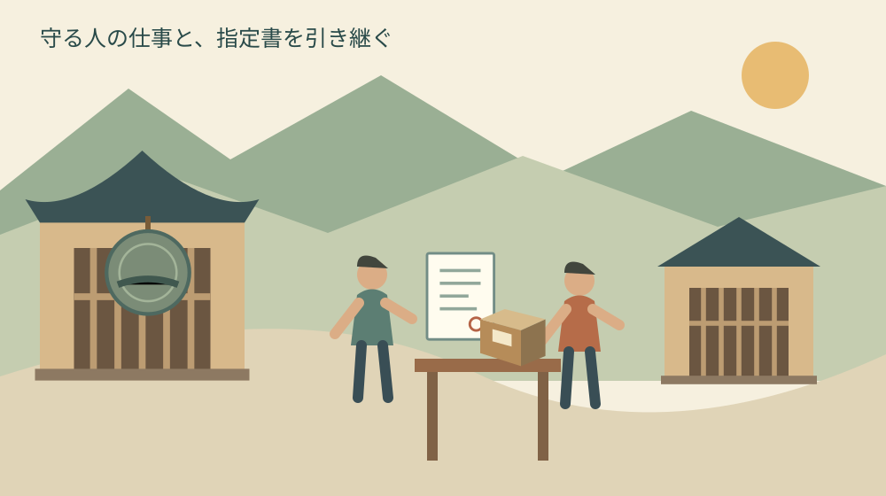
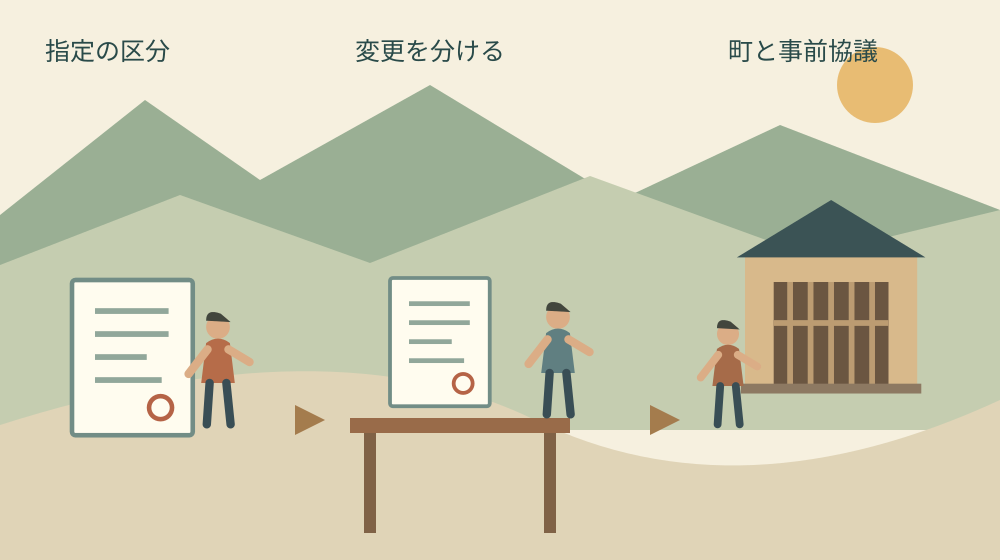

森町で県指定文化財を継ぐ｜変更届の確認順
公開｜水曜日・歴史文化の継承
Q. 森町の県指定文化財を継ぐとき、どの変更届を確認する？
A. 森町の県指定有形文化財を継ぐ際は、指定書と変更内容を確認し、町の担当先へ事前協議をします。静岡県は提出先を各市町と案内しています。所有者、氏名・住所、管理責任者、所在場所、修理は別の確認事項です。必要な届出・期限・添付書類を個別に確認してから提出や作業へ進みます。
守ってきた人の仕事を、書類と一緒に受け取る
森町で文化財を守る方は、品物を置いておくだけでなく、戸締まりや状態の確認、関係者との連絡を続けています。後継の話が出るまでにも時間と手間を払ってきた。その仕事を認めたうえで、担い手が交代するときに何を確認すればよいかを考えます。
私は大石浩之（磐田市／不動産業）です。文化財の専門的な価値を判断する立場ではありません。この記事では、県指定有形文化財を継ぐ際の書類と連絡の順序を、不動産実務で意識する「誰が、何を、いつまでに確認するか」という目線で整理します。
文化財の承継では、所有者の名前だけ書き換えれば全部済むとは限りません。私が最初に勧めるのは、変更する事実を一つずつ分けることです。書式のダウンロードを先に始めるより、所有者、管理する人、物の置き場所のどれが変わるかを書き出す方が、相談を具体的にできます。
今日できる一歩は、指定書がどこにあるかを確認することです。見つからないときも、家族の記憶で指定区分を決めません。「指定書の所在未確認」と記し、持っていそうな人や過去の連絡記録を一つ探します。品物を移したり、修理を頼んだりする前の準備です。
対象は静岡県指定有形文化財に絞る
静岡県公式の「県指定文化財等各種届出書、申請書」は、有形文化財の届出と申請を項目別に案内しています。2025年6月25日更新のページを2026年10月28日に確認しました。提出先は各市町で、提出前に事前協議が必要と明記されています。
本記事の対象は、このページの有形文化財の区分です。古い建物や道具であっても、未指定の物へ県指定の手続きを当てはめません。国指定、国の登録制度、町指定、無形文化財などは区分が違います。指定書の表題や指定主体を確認し、当てはまる案内を選ぶところから始めます。
私は、家族用の相談メモの一番上に、指定主体と文化財の正式名称を写す方法を提案します。日常の呼び名と指定書の名前が異なる可能性を考えるためです。品物の写真だけを見せるより、どの指定の話なのかを担当先とそろえやすくなります。
指定書そのものをなくした場合についても、県は再交付申請書の項目を設けています。紛失したまま別の書類で代用できると自己判断せず、所在未確認の状態を伝えて相談します。再交付と所有者変更が同時に問題になる場合の順序は、町との事前協議で確認する事項です。
森町の県指定品にも、複数の所蔵形態がある
森町公式の図説森町史「49 森町の工芸品・書跡・古文書」は、賀茂神社所蔵の鰐口や、蔵泉寺所蔵の大般若経を県指定として紹介しています。同じページには個人所蔵と表示された県指定の太刀・短刀もあります。文化財の継承は社寺だけの話ではないと分かります。
同じ町史ページには町指定の資料も掲載されています。私は、この一覧を読む際には名称の横の指定区分を必ず別に見るよう勧めます。一つのページに載っている品物同士でも、今回紹介する県の書式を共通で使えるとは限りません。手元の指定書との照合が必要です。
なお、鰐口の年代には同ページの導入文と個別説明で一年の差があります。本記事は年代を判断する目的ではないため、その年を確定値として転記しません。資料に食い違いがあるときは、都合のよい方を採らず、確認を要する事項として区別します。
品物の材質や所蔵表記を見比べたい場合は、森町の工芸品・書跡・古文書の索引も参照できます。歴史資料の紹介は現在の所有者や現物の所在を証明する書類ではありません。個人所蔵品の所在を推測して探しに行くための資料にも使わないでください。

所有者・氏名住所・管理責任者を分ける
県の案内では、所有者変更届と、所有者又は管理責任者の氏名・名称・住所の変更届は別の項目です。物の所有者が別の人になることと、同じ人の住所や名称が変わることを分けて確認します。家族がまとめて「名義変更」と呼んでいる内容を、具体的な事実に直す作業です。
相談メモでは、「誰から誰へ所有者が変わるのか」と「同じ所有者の住所が変わるのか」を別の行にします。相続、譲渡などの法的な成立や権限に疑問がある場合は、専門家への確認も必要です。本記事で家族の一人を所有者と決めたり、相続の結論を出したりはしません。
管理責任者の選任・解任も、県が別に案内する届出です。日々の見回りを手伝う人と、正式に管理責任者として扱われる人を同一視しません。家族内で鍵を渡しただけで、その届出まで終わったと考えないこと。現状の届出内容と、今回変える役割を照合します。
私は、連絡担当の欄も独立させる方法を提案します。書類を集める家族が、所有者本人や管理責任者とは限らないためです。電話で説明する人、判断する人、提出する人を一人にまとめなくても構いません。ただし、誰がどこまで対応できるかは担当先と確認しておきます。
家族の氏名が変更になり、同時に住所も移る場合など、複数の事実が重なることも考えられます。私は、書式が一つで済むかを先に推測せず、起きた変更をすべて伝える方がよいと思います。手続きの数を減らすことより、必要な確認を落とさないことを優先します。
物の所在と修理は、名前の変更と別に扱う
県の有形文化財の案内には、所在場所変更届の項目があります。所有者の住所が変わることと、文化財そのものを置く場所が変わることは別です。人は転居するが品物は同じ場所に残る場合も考えられます。相談時は、人の住所と物の所在を分けて説明します。
私は、移動の相談では、現在の場所、移す予定の場所、移動の目的、希望日を一枚にする方法を提案します。これらは本記事独自の準備項目で、公式の添付書類一覧ではありません。移動の可否や例外、提出の期限は担当先へ確認し、説明が済む前に運送を確定しないようにします。
県は修理届のほか、現状変更等許可申請書も案内しています。後者は現状を変えたり、保存に影響を及ぼす行為をしたりする場合の許可を求める書類です。「元どおりにするつもりだから修理届だけ」と、家族や施工者だけで手続きを選ばないようにします。
修理を考える場合は、どこを、どのように直す予定かを説明できる資料を準備します。現状の写真や作業内容のメモが役立つか、事前協議で尋ねます。写真を撮るために解体する必要はありません。触らないと分からない部分は未確認とし、専門的な判断を待つ方が確実です。
文化財建築の安全性を調べたい場合は、文化財建築の耐震診断を扱った記事も確認できます。ただし、診断の一般的な流れが、個々の県指定文化財の工事許可になるわけではありません。調査の段取りと、予定する行為の手続きは別に相談します。
良い点｜変更の種類ごとに入口を選べる
県の案内の良い点は、所有者、管理責任者、所在、修理といった異なる変更を、項目別に確認できることです。私は、一度に全部を理解しようとせず、自分たちの変更事項を照合できる点を評価します。初めて担当する家族にも、相談の題名を付ける手がかりになります。
提出先が市町であると明示されていることも、準備に役立ちます。県指定だから県へ直接送ればよい、と決めずに済むためです。森町の家族なら、町の担当先に事前協議の方法を確認するところから始められます。郵送や訪問の方法そのものは、連絡時に確かめる事項です。
森町の文化財保存活用地域計画の認定案内には、社会教育課文化振興係の連絡先が掲載されています。電話は0538-85-1114、所在地は森町森92-1です。2026年8月6日更新の案内を10月28日に確認しました。今回の県指定有形文化財の相談方法を尋ねる入口として示します。
私は、町の担当先が分かることで、現物を持ち込む前に相談できる点もよいと思います。重い物や傷みやすい物を先に運ぶと、準備の負担が増えます。まず名称と指定区分、変更内容を伝え、何を見せる必要があるかを確認する方が、担い手の移動を減らせます。
注文したい点｜期限と添付書類を空欄のままにしない
今回確認した県の案内本文だけでは、各事案の提出期限や添付書類を一律に確定できません。私は、この段階で「期限は何日」「これだけあれば受理」と書くことを避けます。書式が置いてあることと、個別の案件の準備が整っていることは違うからです。
私が家族向けの案内に望むのは、事前協議で何を尋ねるかが分かる補助線です。必要書式、添付書類、期限、提出先の担当、提出方法、次の連絡時期を確認します。町の担当者にも確認作業があります。家族側で変更事項を整理しておけば、同じ説明を繰り返す負担を減らせます。
期限を確認していない状態を、「急がなくてよい」と読み替えないでください。私は、変更が起きた、または具体的な予定が出た段階で、早めに相談する方法を勧めます。今日、変更日と予定日をメモへ書き、連絡を担当する人を決めることができます。
手続きに必要な情報と、一般公開してよい情報も分けます。個人所有の文化財の所在や保管方法を、家族の共有SNSへ不用意に載せる必要はありません。相談資料を送るときは、公式の連絡先と求められた方法を確認します。防犯のためにも、渡す相手と目的を限定します。
私は、書類を分かりやすく整理するほど、手続きが簡単に見えてしまうことに迷いがあります。家族の事情や品物の状態によって確認は変わるからです。この記事の一覧は判断を代行する答えではなく、担当先との相談を始めるための道具として使ってほしいと思います。

対案・結論｜指定書、変更一覧、事前協議の順に進む
県指定有形文化財を引き継ぐ準備は、指定書を確認し、変更内容を書き出し、町と事前協議をする順序で進めます。私は、この三つを別の作業として予定に入れる方法を提案します。書類探しの担当と電話する担当が違っても、どこまで済んだかを共有できます。
変更一覧は、現在の状態と変更後の予定を横に並べます。所有者、管理責任者、氏名・住所、物の所在、予定する修理の各欄を作ります。変わらないと思う欄も、根拠を確認したかどうかを記します。分からない欄を想像で埋めず、「確認中」とする方が相談の漏れを減らせます。
事前協議では、指定書の名称と変更の概要を最初に伝えます。原物を見せる必要があるか、写しや写真でよいか、窓口訪問に予約が必要かを尋ねます。これらは本記事で確認済みの受付条件ではありません。無駄な持込みを避けるために家族が尋ねる項目です。
担当先から案内を受けたら、日付、担当部署、確認した内容、残った宿題を記録します。電話で聞いた内容を別の家族へ伝える際も、記憶だけで短縮しないようにします。書類の提出と修理着手が別の時点になる場合は、それぞれの条件を分けて予定表へ書きます。
計画の認定と、個別の届出を混同しない
森町文化財保存活用地域計画は、町の文化財全般の保存と活用に関する計画です。町の認定案内に計画が載っていることから、家族の所有者変更が承認されたとは判断できません。町全体の取組と、特定の文化財の変更手続きは別の確認事項です。
計画の位置付けは、森町文化財保存活用地域計画の記事で整理しています。私は、地域全体の方向を知ることには意味があると考えます。そのうえで、目の前の承継は、指定書と届出の記録を一件ずつそろえる作業として扱います。
家族の引継ぎ袋には、指定書の所在、過去の届出控え、連絡記録、今後の予定をまとめる方法があります。原本をすべて一人へ集めるという意味ではありません。原本を持つ人と、確認用の写しを持つ人を記録し、借りた資料を返す先も分かるようにします。
維持費や日常の役割は、届出の確認と並行して家族で話します。鍵を誰が保管し、状態を誰が見て、異変があれば誰へ連絡するか。私は、その担当が引き受けられる時間を確かめずに、書類だけで承継を完了扱いにしない方がよいと考えます。今日できるのは、現担当の仕事を一つ聞くことです。
大石の視点｜書式より先に、動く人を決める
私はこう考えます。家族で指定書を机に置く場面を考えるなら、最初に確認したいのは印鑑の場所より、今回何が変わるのかです。これは実際の相談の再現ではなく、私の段取りの提案です。所有者が変わるのか、保管場所も動くのか、修理を考えているのか。それを分けて書けば、電話する人が家族全員の事情を抱え込まずに済みます。分からない欄を残したままでも、相談する準備は進められます。
担い手の交代を一枚の書類だけで終わらせない。それが私の結論です。文化財を守ってきた人の仕事を受け取り、必要な手続きを町と確かめる。今日、指定書の所在と変更内容を一行ずつ書くところから始めれば、地域の歴史を家族が実際に維持する段取りへつなげられます。
よくある質問
2026年10月28日に確認した一次資料と、本記事の準備方法から、家族や次の担当者が迷いやすい点を整理します。
県指定文化財の所有者変更届は県へ直接送ればよいですか？
静岡県の案内は、提出先を各市町とし、提出前の事前協議が必要としています。森町の県指定有形文化財については、指定書と変更内容を確認し、町の担当先へ相談方法を尋ねてください。県指定だから県へ直接送るとは判断しません。提出期限、必要な添付書類、郵送や訪問の方法は個別に確認し、案内を受けた日と内容を控えます。
家族の見回り担当が変われば所有者変更届を出すのですか？
見回りの担当交代と所有者の変更は同じではありません。県は、所有者変更と管理責任者の選任・解任を別の項目で案内しています。日常の手伝いの人が正式な管理責任者に当たるかも、自己判断せず確認してください。現在の届出内容と今回変わる役割を整理し、どの手続きが必要かを町との事前協議で確かめます。
修理届を出せば県指定有形文化財の工事を始められますか？
修理届だけで着手できるとは、本記事では判断できません。県は修理届とは別に、現状変更等許可申請書も案内しています。予定する作業がどの手続きに当たるか、提出時期や着手の条件を事前協議で確認してください。直す箇所と方法を説明できるメモを用意し、必要な写真や資料の範囲も尋ねます。工事の判断は専門家と担当先に相談します。
公式情報源
2026年10月確認（確認日：2026年10月28日）。制度・数値・利用条件は変わる場合があります。最新条件は担当先へ、保存修復・権利・税務・登記・相続等の個別判断は専門家へ確認してください。
- 静岡県：県指定文化財等各種届出書、申請書（2026年10月28日確認）
- 森町・図説森町史：49 森町の工芸品・書跡・古文書（2026年10月28日確認）
- 森町：森町文化財保存活用地域計画の認定について（2026年10月28日確認）